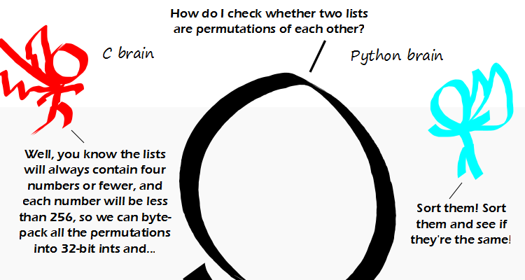

Comic JK 906
When I Feel Like It
⇤
<
?
>
⇥

⇤
<
?
>
⇥
Forum
.
RSS
.
Digg
.
Facebook
.
Reddit
.
Twitter
.
Stumbleupon
Entering youring thoughtsing oning numbering 906ing hereing. Pleaseing, noing trolling, spamming, phreaking, oring permutationING ITing HASing TOing EingNingDing INing ING DAMMITing. Dammit-ing. ingingingingingingingingINGINGINGINGINGINGINGINGinginginginginginging! I heart C, but I have to admit the Python brain solution is more elegant in this case. >>elegance means nothing means nothing for speed & speed is all c cares about If the lists will always contain 4 numbers or fewer, then why would you even worry about which way is faster? > Because you'll be running it in an inner loop with different lists. >> Why would you even consider python for that case? >>> This discussion just went from "speed is irrelevant" to "speed is everything" in two lines. There is a middle ground... >>>>speed is addicting >>>>there is never a middle ground with speed either your something like an OS or a office app that doesn't care there really is no middle ground ever >>>>>if you think "an office app" does not need to care about speed, you clearly never used one on a slow PC... In C, why not simply dynamically allocate a section of memory of appropriate size and treat it as a single number? True it'd be a bit slower than using an int but it'd also not be restricted to contain four or fewer elements or maximum number of 256, and still be faster than sorting (whether in C or Python) and thus could be added to your private code library and reused whenever needed (since testing to see if two lists are permutation of each other seems common enough) Another thing is that if we simply treat any data structure as a number (ie an arbitrary sequence of bits) it shouldn't care about what is in it (even structs) as long as each element is the same size. >>>But surely there are n!=24 permutations for comparison and the sorts can be 2nlogn=16 steps followed by 1 comparison? >>>>no it's 4 comparisons + loop check adding another 4 = 25 and byte packing all the permutations is insanely fast and can be done in registers even with only 3 registers and the predictive modeling of the processor works better on it...In c you think about these things in python they are irrelevant >>>>Statistical properties could save a lot of time here. Start by checking if the first element of list 1 is in list 2. With uniform distributed independent values you can halt in 4 steps 98.4% of the time. >>>>>+1 THERE... ARE... 4 NUMBERS !!!! This is why I love 8 bit microcontrollers. The C brain still rules there. >Hell no! ASM FTW! I program in XML. Here's a short draft of the variable declaration (WIP): <?xml version="1.0" encoding="UTF-8" ?> <list numelements="2" id="global_vars" indexing="one"> <element position="1" type="list"> <list numelements="3" maxelements="4" sorted="unsorted" id="list1" indexing="zero"> <element position="0" type="number"> <number integer="integer" minval="0" maxval="255"> 3 </number> </element> <element position="1" type="number"> <number integer="integer" minval="0" maxval="255"> 5 </number> </element> <element position="2" type="number"> <number integer="integer" minval="0" maxval="255"> 2 </number> </element> </list> </element> <element position="2" type="list"> <list numelements="4" maxelements="4" sorted="unsorted" id="list2" indexing="zero"> <element position="0" type="number"> <number integer="integer" minval="0" maxval="255"> 0 </number> </element> <element position="1" type="number"> <number integer="integer" minval="0" maxval="255"> 6 </number> </element> <element position="2" type="number"> <number integer="integer" minval="0" maxval="255"> 3 </number> </element> <element position="3" type="number"> <number integer="integer" minval="0" maxval="255"> 9 </number> </element> </list> </list> <!-- TODO: Write the actual code (XSLT) and a suitable XML Schema. Output should be an XHTML5 document.--> Man, everything is much better since they invented XML. >See, for this, I'd have used JSON. This was decent, but Scott Adams wins for technical humor today: dilbert.com/2012-04-17/ Wait.... your size upper bound is 4, and you're trying to optimize algorithms? How do you ever get anything done? >Good point. Also, I question the requirements-gathering process. >It's not about optimizing, it's about the part of the brain that thinks in terms of hardware (bytes, arrays, binary operations...), and thus produces machine-optimized code, vs the part that thinks in mathematical terms (objects, lists, functions...) and thus produces "simple and elegant" solutions. Maybe the example could be a little better. >> So what you're saying is that Python is for people who understand maths but don't know shit about computers. >>> No, that's not what he's saying. >>>> Actually, it is. >>>>> Well then you're both idiots and should probably do the rest of us a favor by not writing any more code. >>>>>> Who ever said anything about ever having written code? Non-politicians question and criticize politicians all the time! >>>>>>> You draw an interesting metaphor between programmers and politicians. The C Brain should be "C for x86 brain", because if it's C for ARM, you'd be a total fool to pack anything into 8 bit locations if you don't need to. >True, high-performance C is really one different language for each processor Wow are the EVER a lot of bitter non-funny people who edit this! It's probably all the same people who generate messages for literallyunbelievable.org and when they get older will spend all of their time looking for new and creative ways to be deeply offended. >I, for one, am offended by that suggestion... :( >> Case closed! >>>I've just looked at literallyunbelivable.org... I am offended that those people are allowed to vote... :( THERE... ARE... STILL... ONLY... 4 NUMBERS !!!! >Let's check back next week.